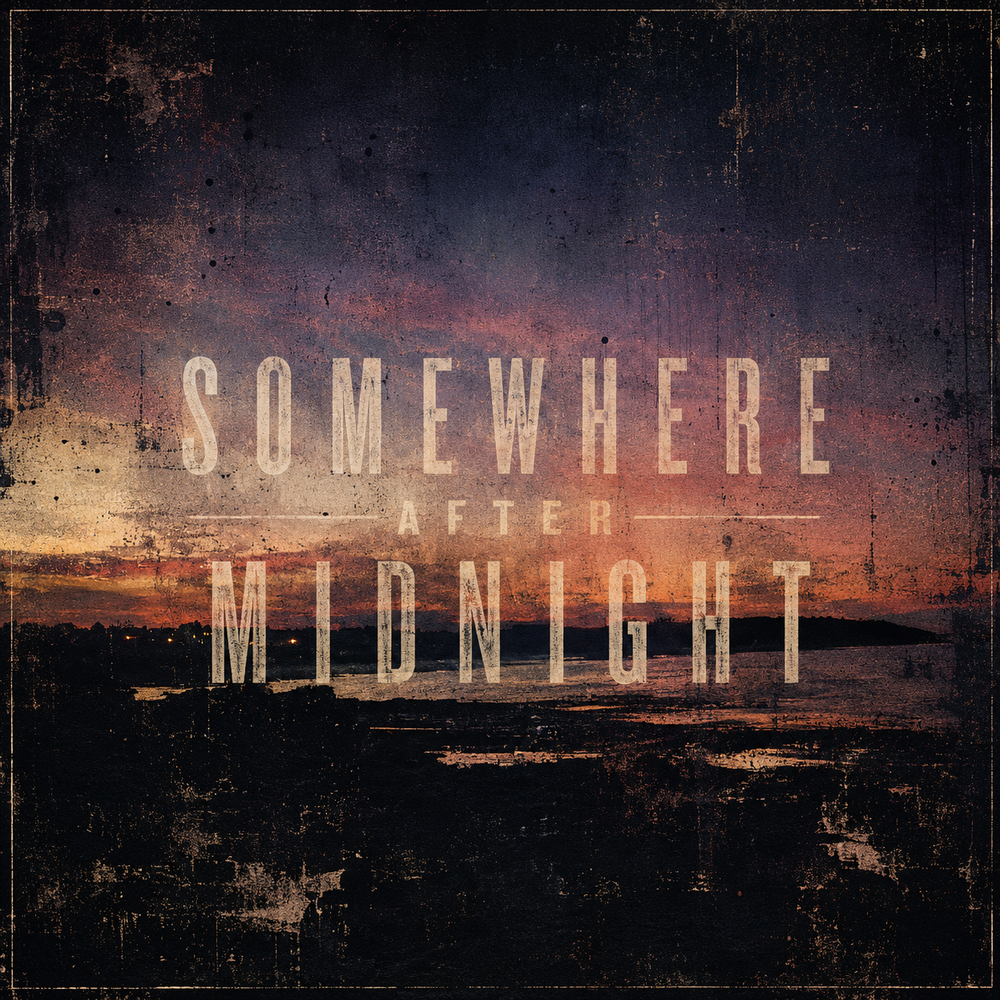

Somewhere After Midnight
Vol. 01
Geist
Something moves in the neardark.
You can't see it, but it knows you're there.
Choose where to listen.
Opening Spotify automatically in 6 seconds.
Somewhere After Midnight →